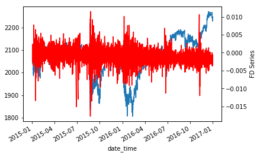

Fractionally Differentiated Features¶
One of the challenges of quantitative analysis in finance is that price time series have trends or non-constant mean. This makes the time series non-stationary. Non-stationary time series are hard to work with when we want to do inferential analysis such as average and variance of returns, or probability of loss. Stationary series also help in supervised learning methods. Specifically, in supervised learning one needs to map hitherto unseen observations to a set of labeled examples and determine the label of the new observation. As Marcos Lopez de Prado (MLdP) says in Chapter 5, “if the features are not stationary we cannot map the new observation to a large number of known examples”. However, to make a time series (or a feature) stationary often requires data transformations like computing changes (change in price, yields or volatility). These transformations also leave the time series bereft of any memory and thereby reducing or eliminating its predictive capability. Fractionally differentiated features tackle this problem by deriving features through fractionally differentiating a time series to the point where the series is stationary, but not over differencing such that we lose all predictive power.
The following graph shows a fractionally differenced series plotted over the original closing price series:
{kind=link}
Implementation¶
The following function implemented in mlfinlab can be used to derive fractionally differentiated features
Source: Chapter 5, AFML (section 5.5, page 83);
The steps are as follows:
Compute weights (this is a one-time exercise)
Iteratively apply the weights to the price series and generate output points
This is the expanding window variant of the fracDiff algorithm
Note 1: For thresh-1, nothing is skipped
Note 2: diff_amt can be any positive fractional, not necessarility bounded [0, 1]
-
frac_diff_ffd(series, diff_amt, thresh=1e-5))¶ - Parameters
series – (pd.Series) a time series that needs to be differenced
diff_amt – (float) Differencing amount
thresh – (float) threshold or epsilon
- Returns
(pd.DataFrame) data frame of differenced series
Given that we know the amount we want to difference our price series, fractionally differentiated features can be derived as follows:
import numpy as np
import pandas as pd
from mlfinlab.features.fracdiff import frac_diff_ffd
data = pd.read_csv('FILE_PATH')
frac_diff_series = frac_diff_ffd(data['close'], 0.5)